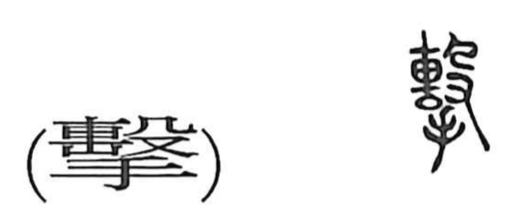

撃

Kun: utsu, tatakau | On: geki
to strike ・ attack ・ to beat
Explanation
撃, formerly 擊, adds 手, hand, below the sound element 毄. In 毄, a sack tied at the top is struck with 殳, a long staff-like weapon or cudgel. Grain placed inside the sack was beaten to remove its husks. 毄 is the earlier graph for this striking action.
The added 手 makes the human action explicit: the hand delivers the blows that thresh the grain. From beating the contents of a sack, 撃 broadens to striking or hitting anything, then attacking an opponent, fighting, or delivering a blow in battle. The related 繫 concerns tying or fastening the sack, while 擊 emphasizes the stroke and its impact.